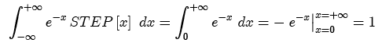

The step exponential function is a decaying exponential modulated by a step function.
The decaying exponential has infinite area:

When modulated by a step function, the resulting function has finite area:


The step exponential may be shifted and scaled.
Parameters:
Support: semi-infinite
Area: 1 (scaled by amplitude parameter)
Symmetry: neither even nor odd
Read more about the decaying exponential at: